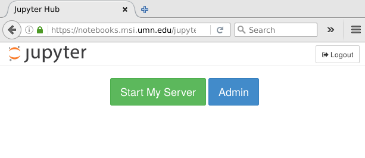
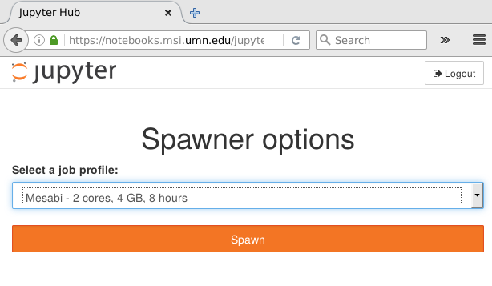
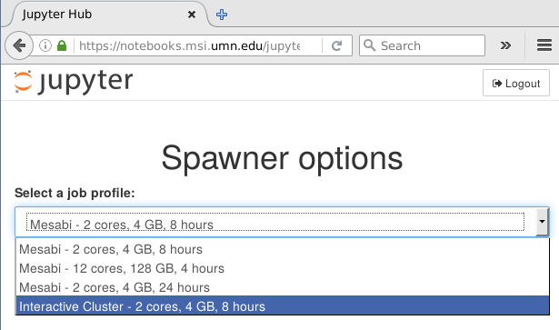
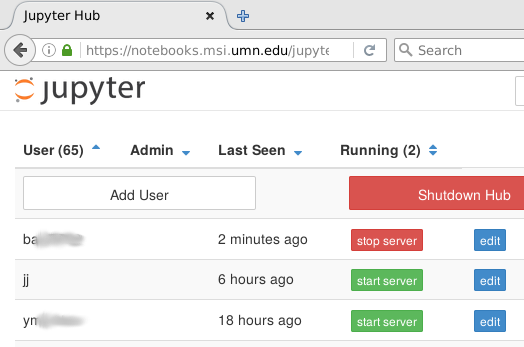

Michael Milligan
Head of Application Development
Minnesota Supercomputing Institute
But the user experience wasn't great
We had to teach users to ...
set up remote desktops
craft and submit job scripts
create ssh tunnels
etc :(
If only there was a way to run them as a service...
started out as a hack to generalize Michael Gilbert's slurmspawner[1], with liberal inspiration from Andrea Zonca's blogging about Jupyterhub on supercomputers[2]
github.com/mbmilligan/batchspawner
class TorqueSpawner(BatchSpawnerRegexStates):
batch_script = Unicode("""#!/bin/sh
#PBS -q {queue}@{host}
...etc...
{cmd}
""", config=True)
batch_submit_cmd = Unicode("sudo -E -u {username} qsub", config=True)
batch_query_cmd = Unicode("sudo -E -u {username} qstat -x {job_id}", config=True)
batch_cancel_cmd = Unicode("sudo -E -u {username} qdel {job_id}", config=True)
state_pending_re = Unicode(r"[QH] ", config=True)
state_running_re = Unicode(r"R ", config=True)
state_exechost_re = Unicode(r"<exec_host>((?:[\w_-]+\.?)+)/\d+", config=True)
Builds on WrapSpawner to intervene in starting the notebook server

Auto-generates a spawner options form drop-down listing profiles

User gets to select a profile and run their notebook server with different options or even totally different spawner classes

Site admin simply configures a list of "profiles":
c.ProfilesSpawner.profiles = [
( "Local server", 'local', 'jupyterhub.spawner.LocalProcessSpawner',
{'ip':'0.0.0.0'} ),
('Mesabi - 2 cores, 4 GB', 'mesabi2c4g12h', 'batchspawner.TorqueSpawner',
dict(req_nprocs='2', req_queue='mesabi', req_memory='4gb')),
('Mesabi - 12 cores, 128 GB', 'mesabi128gb', 'batchspawner.TorqueSpawner',
dict(req_nprocs='12', req_queue='ram256g', req_memory='125gb')),
('Another Cluster - 8 hours', 'small', 'batchspawner.TorqueSpawner',
dict(req_nprocs='2', req_host='labhost.xyz.edu', req_queue='small',
req_runtime='8:00:00', req_memory='4gb', state_exechost_exp='')),
]
Selection is saved as per-user state, so different users can run their notebooks with totally different spawner classes concurrently
WrapSpawner and ProfilesSpawner are included in the batchspawner repo
At U of M we have a site-wide Shibboleth provider, and MSI has a web SSO system that wraps that
Result:
Remote_User: username Remote_User_Data: stuff;morestuff
[1] github.com/cwaldbieser/jhub_remote_user_authenticator/
<LocationMatch "/jupyter/(user/[^/]*)/(api/kernels/[^/]+/channels|terminals/websocket)(.*)">
ProxyPassMatch ws://localhost:8999/jupyter/$1/$2$3
ProxyPassReverse ws://localhost:8999
</LocationMatch>
<Location "/jupyter">
ProxyPass http://localhost:8999/jupyter
ProxyPassReverse http://localhost:8999/jupyter
Header edit Origin <%= @fqdn %> localhost:8999
RequestHeader edit Origin <%= @fqdn %> localhost:8999
Header edit Referer <%= @fqdn %> localhost:8999
RequestHeader edit Referer <%= @fqdn %> localhost:8999
</Location>
MSI is currently a CentOS 6 shop under Puppet management
This is a production service, so reproducible and testable deployment is mandatory!
Result: easy to create test server or parallel test install, guaranteed consistent system state
would love to hook into jupyterhub's test framework to get CI testing during development - not there yet
We log everything to Splunk: just dump log lines to syslog
Example: I get detailed nightly reports of users, runtimes, failures, job types
| username | count | Failures | avg(starttime) | max(starttime) | latest(queue) | latest(mem) | latest(walltime) | latest(nodes) |
|---|---|---|---|---|---|---|---|---|
| balc0022 | 26 | 1 | 46.565667 | 117.146 | ram256g@mesabim3 | 125gb | 4:00:00 | 1:ppn=12 |
| jj | 4 | 2 | mesabi@mesabim3 | 4gb | 8:00:00 | 1:ppn=2 | ||
| yminato | 10 | 0 | 34.327000 | 86.152 | mesabi@mesabim3 | 4gb | 8:00:00 | 1:ppn=2 |
Hub admin dashboard is also a handy way to see at a glance who's using the site
5-10 regular users, ~50 have used at some point since public announcement in May
Building an all-purpose interactive supercomputing hub...
What other interesting things can we tunnel through the proxy? Services architecture might enable new applications, esp in the visualization space
- github.com/mbmilligan/batchspawner
- www.msi.umn.edu
- milligan@umn.edu (or @milligan on slack)